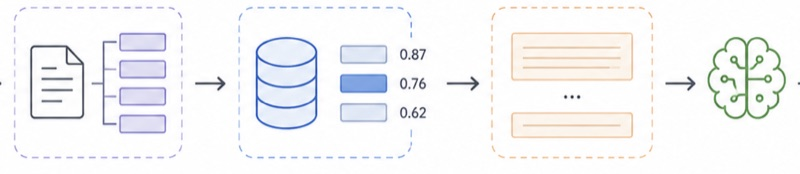

retrieval-ablations
in progress
A controlled ablation over what people assume about RAG. Chunking, retrieval and context assembly measured on one corpus with one eval, reporting recall alongside context cost so the trade is visible. Most benchmarks let a strategy win by quietly using more tokens.
PythonBM25embeddingsevaluation